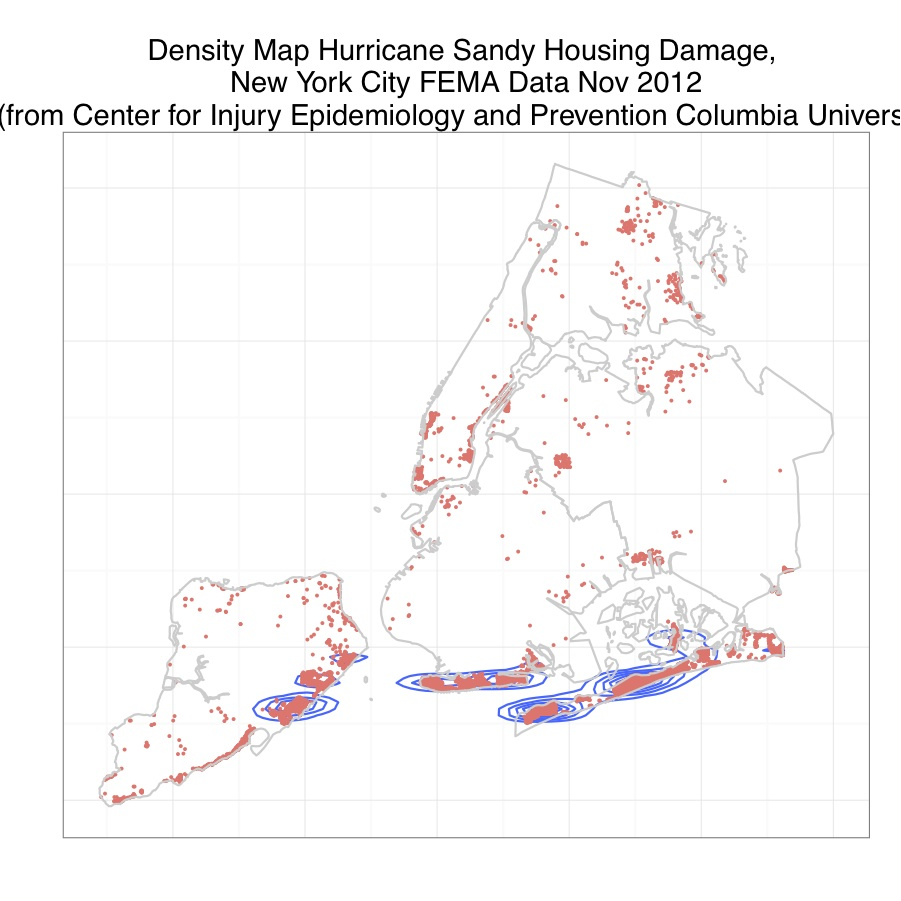
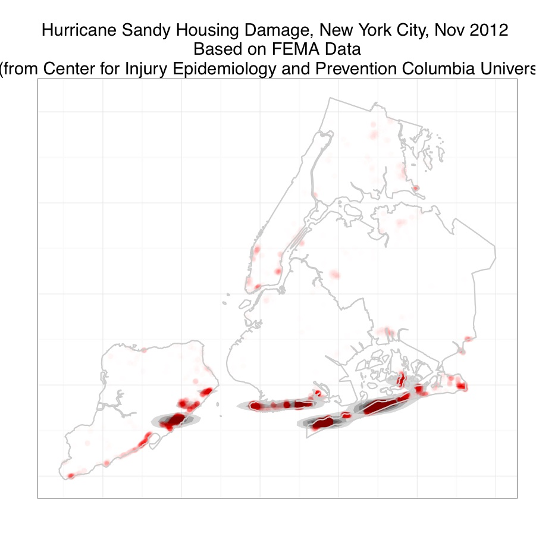
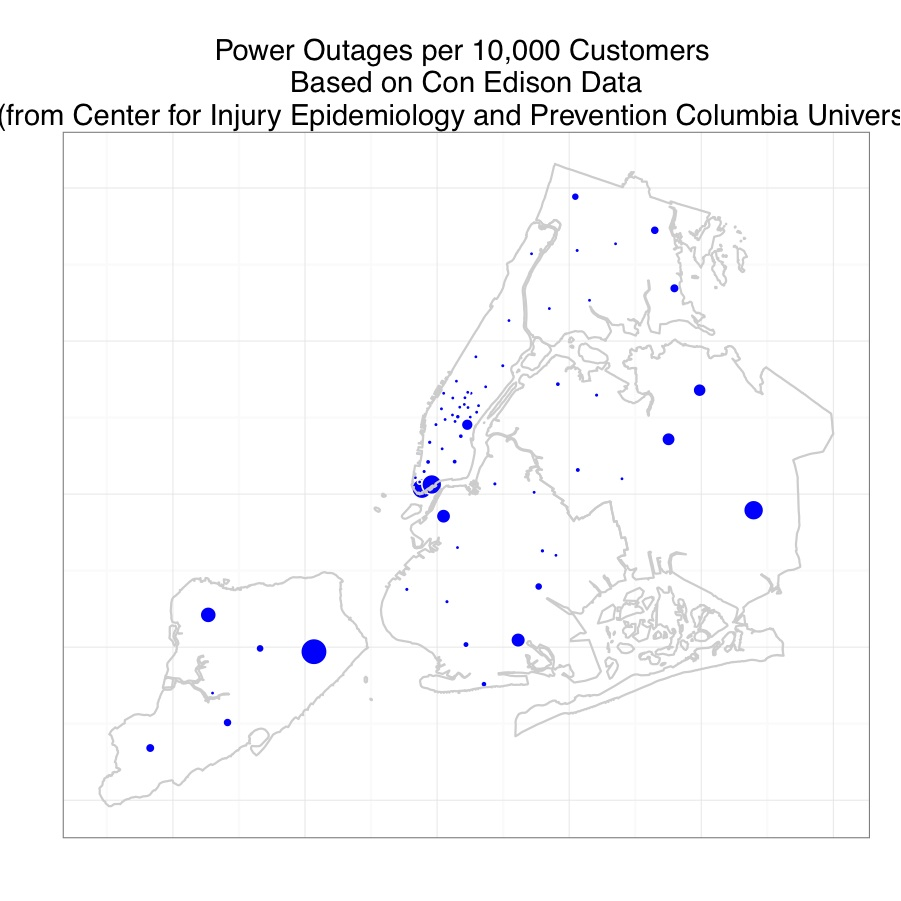

Injuries and Disasters
Injury Epidemiology
Brief Introduction to Injury Epidemiology]
A quick overview of injury epidemiology basics based on one of the introductory chapters from my disertation on pediatric pedestrian injuries.
Slides for a (somewhat) more recent talk on injury epidemiology.
Disaster Epidemiology
Introduction
Brief overview of disaster epidemiology.
Slides for a talk on disaster epidemiology.
Mapping a Disaster
Hurricane Sandy Maps for New York City
In late October, 2012, Hurricane (later Superstorm) Sandy caused extensive damage in the North East. In New York it is very much a tale of two cities, with some areas quickly back to their stride, and other areas continuing to limp along. Here is some epidemiologic surveillance in the form of mapping housing damage and power outages in New York City.
The following code maps FEMA surveillance data on housing damage and inundation and power outages in New York City a week after the storm touched down. The FEMA data are available via Google Crisis Maps here. The New York City borough boundary files are available from Bytes of the Big Apple The outage data files are here and here . A full write up is here .
Preparing the Housing Data
This syntax can be used for some simple plots.
This syntax overlays (actually indexes) the FEMA data to NYC boundaries (see the vignette for an explanation).
Mapping Housing Damage
These maps are for all levels of damage. You can restrict to and explore the different levels of inundation and damage using indexing and the faceting capabilities of ggplot2.
2-Dimensional Density Map
The following bits of code demonstrate how to plot the points, and then develop a density map from points. First you load ggplot2, create a spatial object restricted to NYC, and (because ggplot doesn’t play nicely with spatial objects) convert the spatial object to a data frame for plotting with ggplot2.
The qplot() function can return a quick plot.
The next series of code snippets builds up a density map layer by layer. First, the base map.
p<-ggplot() +
geom_density2d(aes(x=LONGITUDE, y=LATITUDE), data=fema.nyc.df) +
geom_point(aes(x=LONGITUDE, y=LATITUDE, col="red"), data=fema.nyc.df,
size=.9) +
theme(axis.text.x = element_blank(), axis.text.y = element_blank(),
axis.ticks = element_blank()) +
theme(panel.background = element_rect(colour = NA)) +
xlab("")+ylab("") +
theme(legend.position="none") +
ggtitle("Hurricane Sandy Housing Damage, New York City, Nov 2012")
# print(p)To provide some reference, I overlay the borders of the NYC boros. First I use the fortify method to convert the shape files to a data frame for use with ggplot2.
Now overlay the borders
Then some cleaning up and plotting.
p2<-p1+theme_bw()+
theme(axis.text.x = element_blank(), axis.text.y = element_blank(),
axis.ticks = element_blank()) +
theme(panel.background = element_rect(colour = NA)) +
xlab("")+ylab("") +
theme(legend.position="none") +
ggtitle("Density Map Hurricane Sandy Housing Damage,
\n New York City FEMA Data Nov 2012
\n (from Center for Injury Epidemiology and
Prevention Columbia University)" )
print(p2)
“Weather Map” Effects
As an alternative that may be less informative, but perhaps more intuitive to interpret, I recast the density map as with smoothed “weather map” effects. (you can find a wonderful write up on the approach here) I again build up a map layer by layer. First, I establish the base layer of points. I then add a layer of density plots.
Smooth the levels of the density polygons using the alpha function.
Overlay the locations of the points themselves, coloring them red, and blurring overlaid points with the alpha function.
Overlay the borders.
Add a title and clean up the theme elements and print.
p5<-p4+theme_bw()+
theme(axis.text.x = element_blank(), axis.text.y = element_blank(),
axis.ticks = element_blank()) +
theme(panel.background = element_rect(colour = NA)) +
xlab("")+ylab("") +
theme(legend.position="none") +
ggtitle("Hurricane Sandy Housing Damage, New York City, Nov 2012
\n Based on FEMA Data
\n (from Center for Injury Epidemiology and Prevention
Columbia University)" )
print(p5)
Mapping Outages
As I write this more than two weeks after the storm, with daylight hours shortening and temperatures dropping, there are still tens of thousands of people in the tri-state area (some my neighbors) without power.
The following code will create a bubble plot of outage areas based on data one week after the storm. The map itself is ultimately unsatisfactory for a number of reasons, the most important of which is that the data come from Con Edison, which does not service the hard-hit areas of the Rockaways. Those data must be obtained from the Long Island Power Authority (LIPA) whose online data are questionable at best (some townships show more power restored than there are customers…)
First prepare the data by reading in the csv files, merging the outage data with the centroids for the places, assigning a coordinate system and projection, restricting to New York City and converting to a data frame for plotting in ggplot2. The variable to be mapped is the proportion or percentage of customers in a location without power.
outages<-read.csv(".../conEdOutages.csv",header=T, stringsAsFactors=F)
places<-read.csv(".../conEdCoordinates.csv",header=T, stringsAsFactors=F)
conEd<-merge(outages, places, by="location", all.y=T)
conEd$outages[is.na(conEd$outages)]<-0
conEd$customers[is.na(conEd$customers)]<-.1
conEd$propOut<-conEd$outages/conEd$customers*100
summary(conEd$propOut)
coordinates(conEd)<-~long+lat
proj4string(conEd)<-CRS("+proj=longlat +datum=NAD83")
# plot(conEd[boros,],col="blue", pch=20, cex=.9)
conEd.nyc<-conEd[boros,]
conEd.nyc.df<-as.data.frame(conEd.nyc)Here, create the first layer mapping the coordinates to filled circles, sized by the proportion of customers without power.
To overlay the boro boundary file, you have to turn off the ggplot feature of inheriting aesthetics from the previous map with “inherit.aes=F”
Now print the map. Note that I did not print the legend, but that is easy to do by removing the line of code “theme(legend.position=”none”)”
p9<-p8+theme_bw()+
theme(axis.text.x = element_blank(), axis.text.y = element_blank(),
axis.ticks = element_blank()) +
theme(panel.background = element_rect(colour = NA)) +
xlab("")+ylab("") +
theme(legend.position="none") +
ggtitle("Power Outages per 10,000 Customers
\n Based on Con Edison Data
\n (from Center for Injury Epidemiology and Prevention
Columbia University)" )
print(p9)